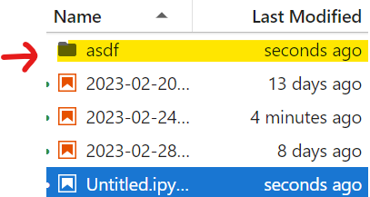
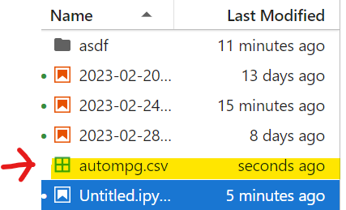
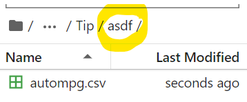
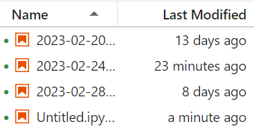

2023-02-20-tips.ipynb 2023-02-28-link.ipynb
2023-02-24-tips.ipynb Untitled.ipynb리눅스 명령어
Tip
!ls / !ls . / !ls ./
!ls -a
!ls ..
!ls sample
!mkdir asdf

!wget
url에 있는 파일을 다운로드하여 현재 디렉토리에 저장
--2023-03-09 13:45:20-- https://raw.githubusercontent.com/pinkocto/BP2022/master/_notebooks/autompg.csv
Resolving raw.githubusercontent.com (raw.githubusercontent.com)... 185.199.111.133, 185.199.108.133, 185.199.109.133, ...
Connecting to raw.githubusercontent.com (raw.githubusercontent.com)|185.199.111.133|:443... connected.
HTTP request sent, awaiting response... 200 OK
Length: 18685 (18K) [text/plain]
Saving to: ‘autompg.csv’
autompg.csv 100%[===================>] 18.25K --.-KB/s in 0s
2023-03-09 13:45:20 (39.7 MB/s) - ‘autompg.csv’ saved [18685/18685]

!cp autompg.csv ./asdf
autompg 파일을 ./asdf로 복사

!ls ./asdf
현재디렉토리에서 asdf 디렉토리의 내용 출력 (!ls asdf와 동일)
!rm automgp.csv
!rm -rf asdf
- r은 recursively, f는 force의 약자
